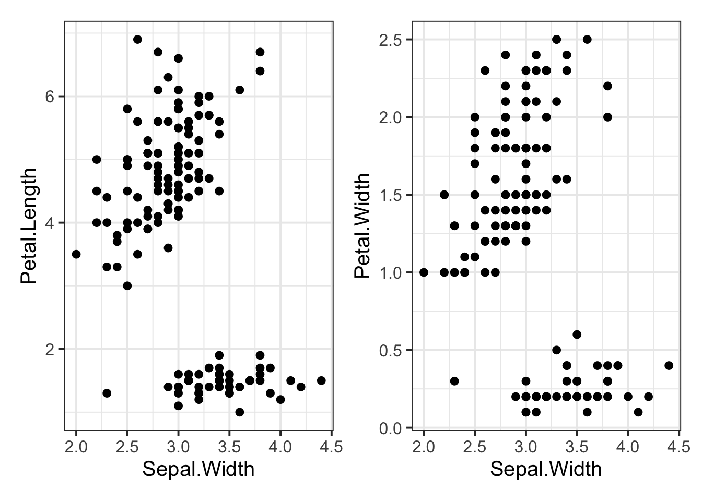

| variable | description |
|---|---|
| age | Age in years of respondent |
| outdoor_time | Self report estimated number of hours per week spent outdoors |
| social_int | Self report estimated number of social interactions per week (both online and in-person) |
| routine | Binary 1=Yes/0=No response to the question 'Do you follow a daily routine throughout the week?' |
| wellbeing | Warwick-Edinburgh Mental Wellbeing Scale (WEMWBS), a self-report measure of mental health and wellbeing. The scale is scored by summing responses to each item, with items answered on a 1 to 5 Likert scale. The minimum scale score is 14 and the maximum is 70 |
| location | Location of primary residence (City, Suburb, Rural) |
| steps_k | Average weekly number of steps in thousands (as given by activity tracker if available) |
02: Multiple regression
This week, you’ll add another predictor into the same model you fit last week. You’ll practice interpreting coefficients in this multiple regression model (i.e., a model with more than one predictor), and you’ll learn how to make a nice plot of one of the resulting model-estimated associations.
NoteGet set up
- Open RStudio.
- Create a new R Markdown (.Rmd) file for this week’s exercises.
- Save it somewhere you can find it again.
- Give it a clear name (for example,
dapr2_lab02.Rmd). - In the first code chunk, load the packages you’ll need this week (and install them if you don’t have them already):
tidyversepatchworksjPlot
Research question (RQ): Is there an association between wellbeing and time spent outdoors, when controlling for the effect that social interaction has on wellbeing?
Data dictionary:
NoteMore detail about this dataset
From the Edinburgh & Lothians, 100 city/suburb residences and 100 rural residences were chosen at random and contacted to participate in the study. The Warwick-Edinburgh Mental Wellbeing Scale (WEMWBS) was used to measure mental health and wellbeing.
Participants filled out a questionnaire including items concerning: estimated average number of hours spent outdoors each week, estimated average number of social interactions each week (whether on-line or in-person), whether a daily routine is followed (yes/no). For those respondents who had an activity tracker app or smart watch, they were asked to provide their average weekly number of steps.
Read in and explore data
Question 1
Read in the data from https://uoepsy.github.io/data/wellbeing_rural.csv and store it in a variable named mwdata (“mw” stands for “mental wellbeing”).
🗂️ See Multiple regression > Example flash card.
Question 2
Recall our RQ: Is there an association between wellbeing and time spent outdoors, when controlling for the effect that social interaction has on wellbeing?
Identify the three relevant variables (that is, the three columns in mwdata) which we’ll use to address this question. Write down which one is the outcome variable and which two are the predictors.
Create two scatterplots, showing how each of the independent (predictor) variables is individually associated with the outcome variable.
Add on geom_smooth(method = 'lm', se = FALSE) to each plot. This will add the straight line of best fit to each scatterplot.
Bonus challenge: use patchwork to create a single graphic that shows the two scatterplots beside each other.
TipCode hint:
patchwork
To patchwork two plots together, you’ll first need to store each of the plots under their own name, for example:
# the first plot
plot_petallength <- iris |>
ggplot(aes(x = Sepal.Width, y = Petal.Length)) +
geom_point()
# the second plot
plot_petalwidth <- iris |>
ggplot(aes(x = Sepal.Width, y = Petal.Width)) +
geom_point()Then as long as you’ve got the patchwork library loaded, you can write the two names with a + sign in between, and you’ll get the two plots placed side by side:
# the first plot + the second plot
plot_petallength + plot_petalwidth
(If patchwork is not loaded, you’ll get an error about bad use of arithmetic operator, because R won’t know how to handle the + sign.)
🗂️ See Exploring data visually > Bivariate associations flash card.
Question 3
When we include multiple predictors in a linear model, we want to make sure that they’re aren’t too highly correlated. (In Week 8, we’ll go into more detail about why.)
Use the cor() function to find the correlation coefficient for the correlation between the two predictor variables.
Write down what kind of correlation this coefficient represents. (Positive or negative? Weak, medium, or strong?) If in doubt, check the flash cards.
TipCode hint:
cor()
Here’s the basic usage of cor() for getting the correlation between two variables:
cor(variable1, variable2)If you want to pull each of the two variables out of a dataframe called df:
cor(df$variable1, df$variable2)Or, if the two variables are the only two columns in a dataframe called df:
cor(df)🗂️ See Exploring data numerically > Correlation flash card.
Set up and fit linear model
Question 4
Write the mathematical model formulation for the linear model that will address our RQ.
Which \(\beta\) coefficient will we interpret in order to address our RQ about the relationship between outdoor time and wellbeing, when controlling for social interaction? Write this down.
🗂️ See Multiple regression > Model specification flash card.
Question 5
Use the function lm() to fit this linear model. Name the result mdl.
🗂️ See Multiple regression > Fitting model flash card.
Look at model estimates
Question 6
Look at the model summary using summary().
Write one sentence per \(\beta\) coefficient, interpreting what each coefficient means in the context of this data and RQ.
🗂️ See Multiple regression > Interpreting results flash card.
Question 7
Now you’ll use a function called tab_model() to create a pretty-printed table of coefficient estimates. It comes from the package sjPlot.
Run the following code and observe what it gives you:
tab_model(mdl)Caution: tab_model() is very nice, but if you include it in an Rmd file which you then want to knit to PDF, it will cause knitr to crash. So it’s best to use tab_model() only in Rmd files that you want to knit to HTML. If you need to knit to PDF, then you can recreate the output of tab_model() manually.
Question 8
Here you’ll try out a new function called plot_model(), also from the package sjPlot.
Run the following code to generate a plot showing the association between outdoor_time and wellbeing, for a few different values of social_int.
plot_model(
mdl,
type = 'eff',
terms = c(
'outdoor_time',
'social_int'
),
show.data = TRUE
)(If you’re not sure what one of the lines of this code does, then comment it out and run the rest of the code again. Pay attention to what changes.)
Write down brief responses to each of the following questions:
- Based on the plot, is the effect of
outdoor_timethe same for all values ofsocial_int? (Hint: A variable’s “effect” is shown by its slope.) - Based on the coefficient estimates and/or the plot, is the RQ supported by this analysis?
Use the model to make predictions
Question 9
Take the coefficients estimated in mdl and round them to two decimal places.
Substitute them appropriately into the mathematical model expression you wrote in Q4.
🗂️ See Compute model-predicted values > Example flash card.
Question 10
Last week, you used your linear expression to reconstruct the estimated wellbeing score of somebody whose data we observed (the person whose data was in the third row of mwdata).
Finally, this week, you’ll use the linear expression you wrote in Q9 to predict wellbeing scores for people that we haven’t observed any data from.
Calculate by hand (not using predict()) the wellbeing scores of the following three people:
- Shuting:
- Outdoor time = 36 hours
- Social interactions = 19
- Fatima:
- Outdoor time = 20 hours
- Social interactions = 15
- Donna:
- Outdoor time = 1 hour
- Social interactions = 7
Who has the highest predicted wellbeing score? Who has the lowest? Write your responses down.
🗂️ See Compute model-predicted values > Example flash card.
Optional: Knit your report to PDF
Note: During the labs, please spend your time on the exercises above, not on rendering your document. This guidance is here in case you have extra time at the end.
Rmarkdown is a useful format because it can be used as a foundation for generating different kinds of documents. For the group report, you’ll be asked to render your Rmd file to PDF. Why not practice now?
First, make sure you have tinytex installed in R. This is what lets you convert things into PDF format.
Run the following code to install tinytex (you’ll only need to run it once).
install.packages("tinytex")
tinytex::install_tinytex()Then ensure that the “yaml” (rhymes with “mammal”) header—the bit at the top of your Rmd document—looks something like this:
---
title: "this is my report title"
author: "B1234506"
date: "07/09/2025"
output: bookdown::pdf_document2
---Then follow the instructions from the Rmd bootcamp to knit your Rmd document to PDF.
If you encounter errors, refer to the DAPR1 formatting resources / knitting checklist.
TipWhat to do if you cannot knit to PDF
If you are having issues knitting directly to PDF, try the following:
- Knit to HTML file
- Open your HTML in a web-browser (e.g. Chrome, Firefox)
- Print to PDF (Ctrl+P, then choose to save to PDF)
- Open file to check formatting
TipHiding code and/or output from code chunks
Review Lesson 5 of the rmd bootcamp for a detailed description/worked examples.
Hiding R Code
To not show the code of an R code chunk, and only show the output, write:
```{r, echo=FALSE}
# code goes here
```Hiding R Output:
To show the code of an R code chunk, but hide the output, write:
```{r, results='hide'}
# code goes here
```Hiding R code AND output
To hide both code and output of an R code chunk, write:
```{r, include=FALSE}
# code goes here
```